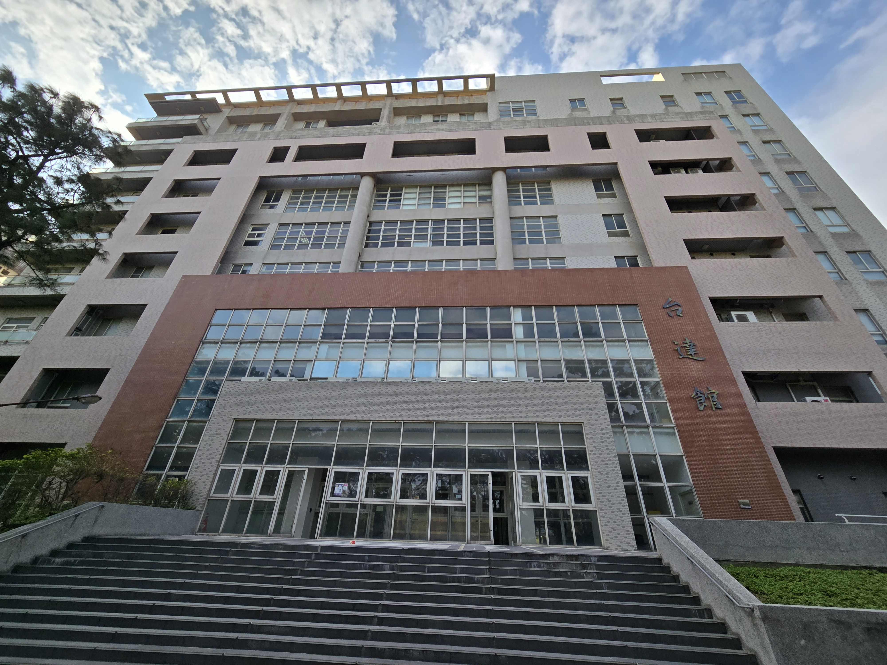
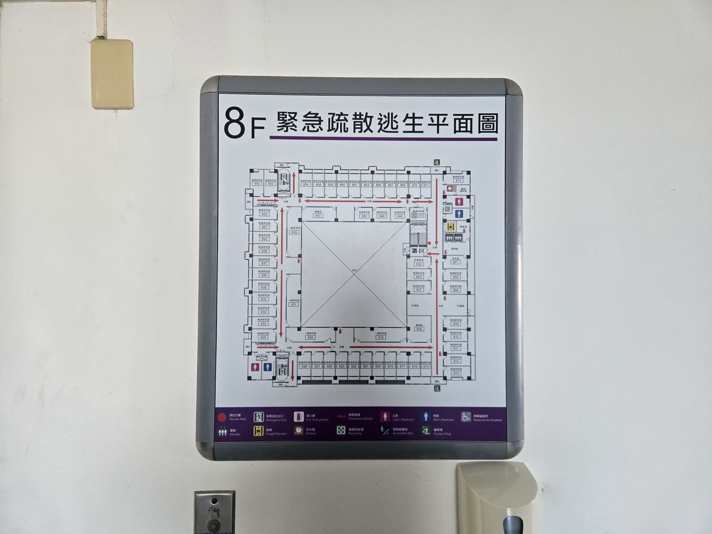
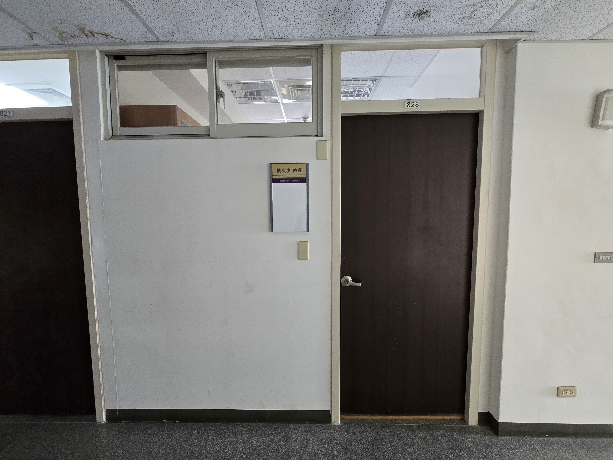
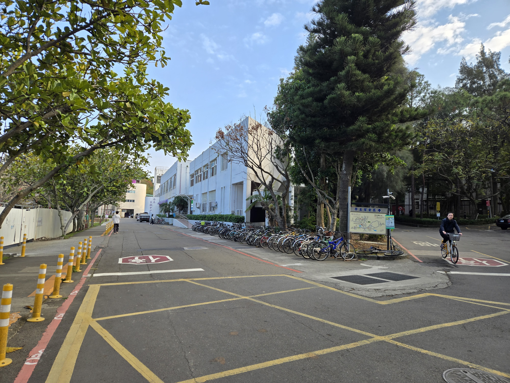
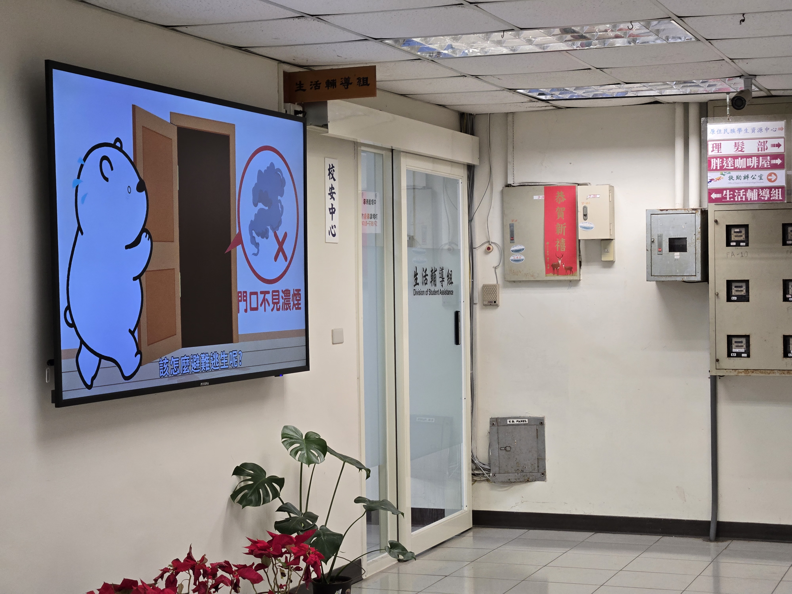

所需文件
1. 獎學金申請表（雙面，須給主任簽名）
2. 推薦信（在主任那裡）
3. 成績單（含當學期成績）
給教授簽名
時間：2026/01/13 (二) 14:00
地點：台達館 828 (劉奕汶 教授)
需要將申請表給教授簽名，並跟教授拿簽好名的推薦信。



送至生輔組
地點：水木 2F 生輔組
從全家旁邊的樓梯上去，將 申請表、推薦信和成績單 交給生輔組承辦人 曾資敏 小姐。

